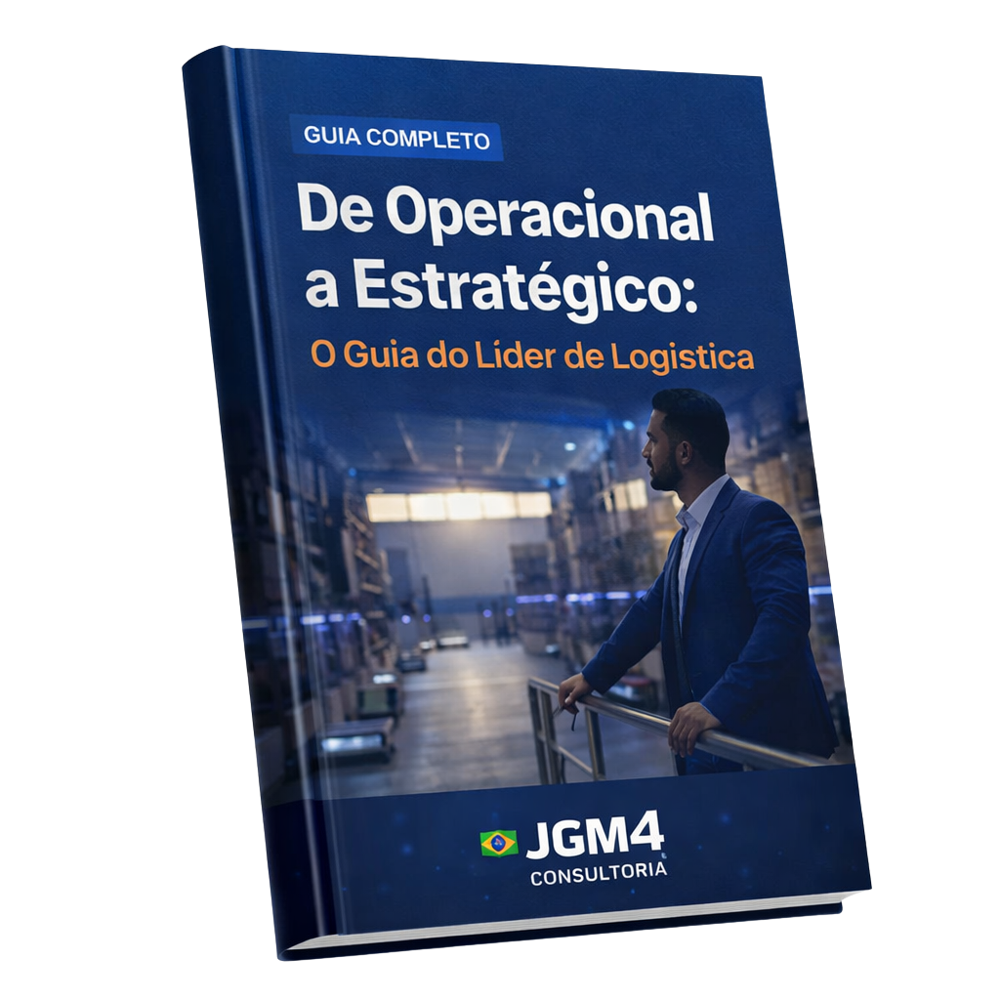

A gestão de equipes logísticas exige equilíbrio entre pessoas, processo e resultado. O líder precisa garantir produtividade, qualidade, segurança, comunicação entre turnos e cumprimento de prazo, muitas vezes sob alta pressão operacional.
Quando a liderança atua apenas apagando incêndio, a equipe perde referência. Quando existe rotina de gestão, os problemas aparecem mais cedo, os indicadores ficam claros e a cobrança deixa de ser pessoal para virar acompanhamento do processo.
O papel do líder de logística
O líder de logística conecta meta e execução. Ele traduz volume de pedidos, prioridades comerciais, capacidade da equipe, restrições de estoque e prazo de transporte em uma rotina clara para o turno.
- Organizar prioridades do dia.
- Distribuir atividades conforme capacidade e habilidade.
- Acompanhar produtividade sem abandonar qualidade.
- Treinar pessoas no processo correto.
- Tratar conflito com fatos, não com improviso.
Rotina de gestão para equipes logísticas
Reunião diária
Alinhe volume, prioridades, riscos, absenteísmo, metas e ocorrências em 10 a 15 minutos.
Quadro de indicadores
Mostre produtividade, qualidade, atrasos, backlog e segurança de forma visual e simples.
Ronda operacional
Observe gargalos no chão da operação: fila, espera, movimentação desnecessária e retrabalho.
Fechamento do turno
Registre pendências, ocorrências, desvios e passagem de bastão para o próximo turno.
Indicadores para liderar melhor
Indicador bom orienta comportamento. Se a empresa mede só quantidade, pode aumentar erro. Se mede só qualidade, pode perder velocidade. O equilíbrio está em combinar produtividade, prazo e qualidade.
Produtividade por hora
Pedidos, linhas, volumes ou tarefas concluídas por pessoa, hora ou turno.
Erro de separação
Mostra falhas de treinamento, endereçamento, conferência ou pressão de prazo.
Backlog
Indica acúmulo de pedidos ou tarefas e risco de atraso antes da crise.
Absenteísmo e turnover
Revelam desgaste, clima, escala inadequada ou falhas de liderança. Veja como analisar o absenteísmo nas empresas como risco operacional.
Treinamento e matriz de habilidades
Uma equipe logística madura sabe quem está apto a receber, armazenar, separar, conferir, operar coletor, fazer inventário, tratar devolução e apoiar expedição. A matriz de habilidades evita dependência de poucas pessoas e ajuda a planejar cobertura em férias, faltas e picos.
Esse ponto se conecta diretamente com a padronização de processos logísticos, porque não há treinamento consistente sem processo claro.
Feedback na operação logística
Feedback bom é específico, rápido e baseado em comportamento observável. Em vez de dizer “você precisa melhorar”, o líder mostra o desvio, explica o impacto e combina uma ação prática para o próximo ciclo.
Erros comuns de liderança logística
- Cobrar meta sem explicar prioridade.
- Medir produtividade sem medir erro e retrabalho.
- Centralizar decisões simples.
- Promover pessoas sem treinar liderança.
- Deixar conflitos entre áreas sem regra clara.
- Não registrar pendências entre turnos.
Conclusão
Gestão de equipes logísticas é disciplina diária. Com processo, indicador, treinamento e comunicação, a equipe entrega mais com menos desgaste. Sem isso, a liderança vira correção permanente de urgências.
Para enxergar o tema completo, leia também o artigo principal sobre gestão de pessoas e processos na logística.
Perguntas frequentes
Como melhorar a produtividade da equipe logística?
Mapeie gargalos, treine o processo, ajuste layout, alinhe prioridade diária e acompanhe produtividade junto com qualidade.
Qual indicador mais importante para equipe logística?
Depende da dor principal. Em geral, combine produtividade por hora, erro de separação, backlog, acuracidade e OTIF.
Como reduzir conflitos na logística?
Defina papéis, critérios de prioridade, regras de exceção e rotina de comunicação entre áreas e turnos.
Conecte processo, equipe, rotina e indicador
Gestão logística melhora quando liderança, padrões de trabalho e indicadores caminham juntos. Continue pelos conteúdos e ofertas relacionadas.
Diagnosticar processos logísticos